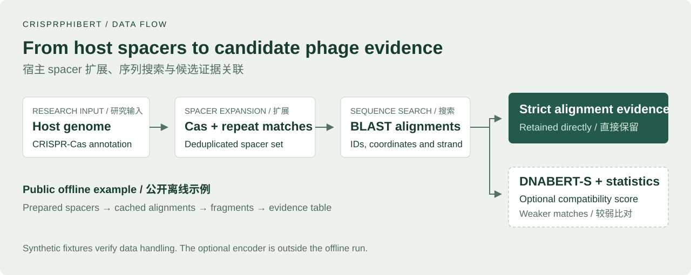
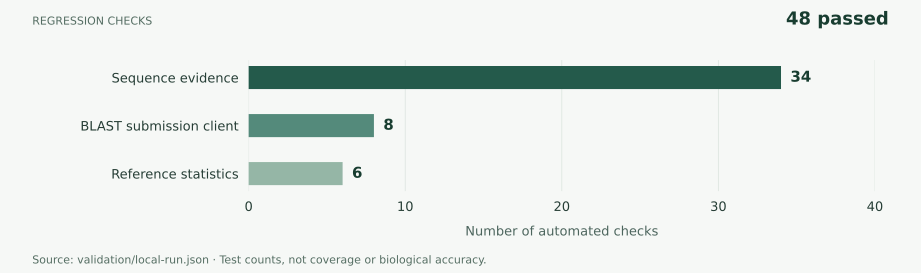

CRISPRPHIBert
Phage–host candidate prediction from CRISPR sequence evidence
基于 CRISPR 序列证据的噬菌体—宿主候选互作预测

Contribution / 个人参与
Bohan Wu / 吴博涵 participated in data preprocessing, BLAST upload workflows and part of the data-flow integration, connecting sequence inputs and intermediate alignments to downstream analysis.
吴博涵参与负责数据预处理、BLAST 上传流程和部分数据流集成，协助衔接序列输入、中间比对结果与后续分析。
Supervisor: Dr. Dan Wang / 王丹老师
Team: 祁琛、陈乐怡、黄子倩、吴博涵、刘昇瑞
Verification / 验证记录

The offline example uses synthetic sequences, cached alignment fixtures and manually supplied scores. These verify the data flow; they do not report biological accuracy. 合成示例用于验证数据流，示例分数不代表真实模型结果。